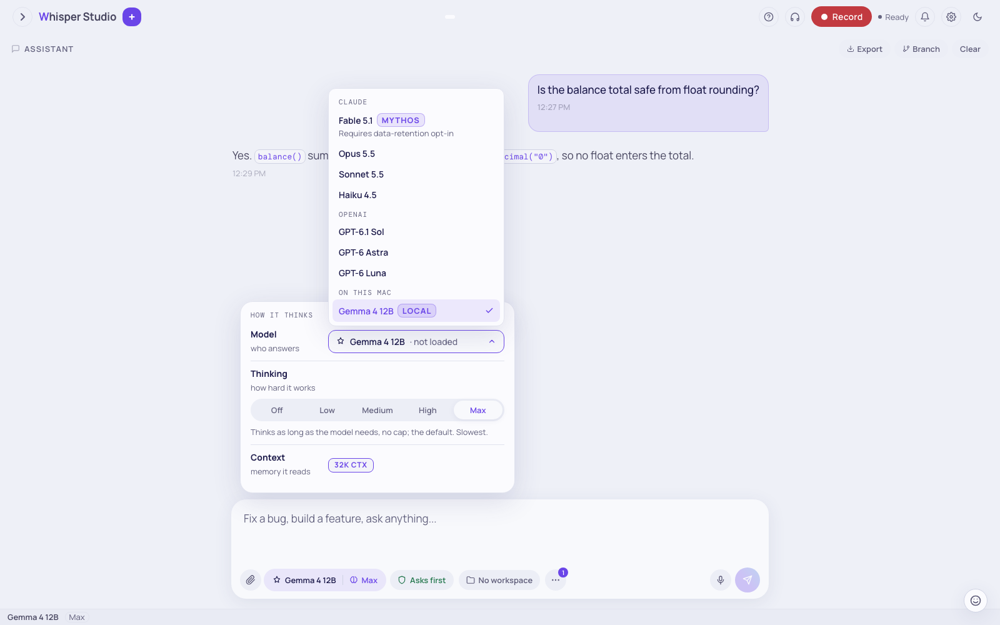
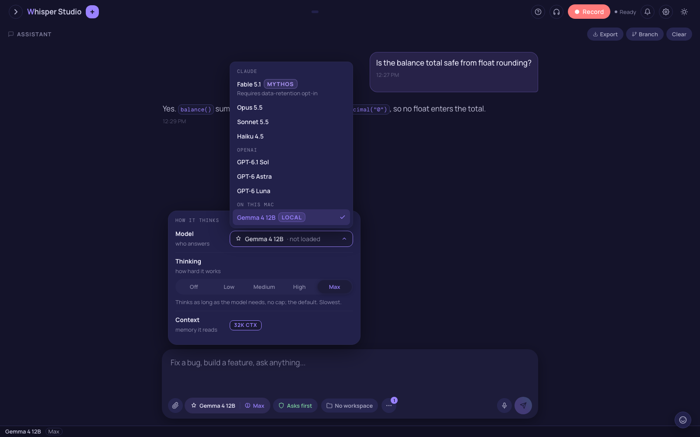

Your first chat
The composer is the main control of Whisper Studio. This tutorial shows how to send a message and read the answer. It also shows how to change the model and use the slash commands.
You do all the steps in the chat input at the bottom of the window. The composer sends each
turn to POST /api/chat. The server sends the turn to the model that you selected.
This model is Claude or GPT on Amazon Bedrock, or an on-device model. The model returns the answer
as a stream. The app saves the conversation after each change, and the sidebar shows it.


Send your first message
You do not need a workspace or an attachment. You need one chat model that your model mode can run. A new install starts in Local mode. In Local mode, the app runs chat only on an on-device model, and a new install has no on-device model.
Before you send the first message, do one of these steps:
- Install an on-device model in Settings → Chat and models → Models → Discover.
- Set Settings → Model mode to Hybrid or Cloud. Then make sure that the AWS connection operates (see First run & verify).
-
Type in the composer
Click the input box. The box shows the text "Fix a bug, build a feature, ask anything...". Type a question. The box becomes taller for long text.
-
Press Enter to send
Press Enter to send the message. To add a new line, press Shift+Enter. Cmd+Enter sends the message also when an autocomplete menu is open. You can also click the paper-plane Send button.
-
Read the answer stream
The answer comes in small parts. During the stream, the Send button changes to a square Stop button. To stop the turn, click Stop or press Esc.
-
Ask a follow-up question
Type a new message and send it. The app sends the earlier messages to the model as context. The app saves the conversation, and the left sidebar shows it. In the sidebar, you can rename, find, or open the conversation again.
The microphone in the composer writes your speech into the input box. To send the text, say a phrase such as "send now" or "okay send" at the end. For dictation and recordings, see Voice & meetings.
Read the thinking time
While the model works, the line "Thinking..." shows a timer. The timer counts only the time
that the model works. It stops while an approval card or a question waits for you, and while
a sleep tool runs. The waits show next to the timer, for example
"Thinking... 41.0s · waited on you 18m". A sleep shows as "slept 2m".
The waits stay under the answer while it streams. When the answer is complete, the
message shows only the thinking time.
Add a message to a turn that runs
You can send a message before the answer is complete. During a turn, the input box shows "Add to the running turn...". The app adds your message to the turn that runs. The app does not start a second conversation. A notice shows: "Added to the running turn. The assistant reads it right away while it is still thinking, else after its current step, and answers it below your message." Use this function to correct the work, to add a limit, or to answer a question from the assistant.
The app shows your message below the answer, with a dashed border and the label "Queued". When the server adds the message to the model input, the app moves the message to that position in the conversation. If the model did not start its answer, the server stops that step. Then the server starts the step again with your message, and you get one answer. If the model started its answer, that answer completes. Then the app shows the answer to your message in a new bubble below your message.
If the turn ends before the server gets your message, the server does not add it. A notice that starts with "Not delivered" tells you this. Send the text again as a new message.
The app does not add an attachment to a turn that runs. Send the file with a new message after the turn ends.
Stop a turn
When you click Stop or press Esc, the turn stops immediately. The app keeps the text that you saw. The partial answer stays in the conversation with a (Stopped) marker. The app keeps each tool step that it showed, and marks an incomplete step as stopped. The turn stays in your history.
Stop also stops the shell commands that this turn started, and the /subagent
runs of this session. Turns in other sessions continue. If the turn did not make text or tool
steps, the app adds nothing to the conversation.
Change the model during a conversation
The How it thinks control below the composer shows the model, the thinking level, and the answer length. Click it to open its panel. The panel has these rows:
| Row | What it sets |
|---|---|
| Model | The model that answers. The next message uses the new model with the full history. |
| Thinking | The thinking level of the model. A model without levels shows "This model has no thinking levels". |
| Answers | The answer length: Brief, Normal, or Detailed. This row is not available for an on-device model. |
| Context | The context window of an on-device model. Only an on-device model shows this row. |
The catalog contains these models:
| Family | Models | Use |
|---|---|---|
| Claude | Haiku 4.5, Sonnet 5.5, Opus 5.5 | Haiku is the fastest model and has the lowest cost. Opus is the best model for difficult work with many steps. Sonnet is between the two. |
| Fable | Fable 5.1 | The same depth as Opus. The app shows the data-retention consent screen each time that you select it. |
| GPT (on Amazon Bedrock) | GPT-6 Astra, GPT-6 Luna, GPT-6.1 Sol | A second opinion, or a different style of answer. In Cloud mode and Hybrid mode, GPT-6 Luna is the default model. |
| On-device | The models that you installed | Work without a network and with no cost for each turn. A new install has no on-device model. Install one in Settings → Chat and models → Models → Discover. |
Your model mode controls which models the picker shows. You can also hide models in your configuration. To change the model from the keyboard, type a slash command:
/model haiku
/model sonnet5.5
/model opus5.5Type /model and a space to see the available models. The menu shows the version
label, for example Sonnet 5.5. The menu inserts the short key, for example
sonnet5.5. For cloud, hybrid, and on-device options, see
Model modes. For the route of each model, see
Model backends & modes.
Each time that you select a model with the Mythos badge (Fable 5.1), the app shows the data-retention consent screen. Confirm to continue, or cancel to keep your current model. When you select a different model again, the app asks if it must disable data retention.
Set the thinking level
The Thinking row sets how much the model reasons before it answers. A low level gives a fast answer at a low cost. A high level gives more time to difficult problems. Set the level in the panel, or type a command:
/effort low
/effort medium
/effort high
/effort maxEach model has its own set of levels. The default level is max. This table
shows the levels of each model:
| Models | Levels |
|---|---|
| Opus 5.5, Sonnet 5.5, Fable 5.1 | Low, Medium, High, Extra, Max, Ultracode |
| GPT-6 Astra, GPT-6 Luna, GPT-6.1 Sol | Low, Medium, High, Max, Ultracode |
| Haiku 4.5 | No levels |
| On-device model that can think | Off, Low, Medium, High, Max (see Thinking levels) |
On an on-device model, /effort sets the Thinking level, and
/effort off stops the thinking. If you ask for a level that the model does not
have, the app sets the nearest lower level. Then the app shows the level that it set. The
composer also accepts /effort xhigh as an alias for Extra. To see the
levels of the current model, type /effort with no argument.
ultracode is more than a thinking level. It is a session mode. It uses the
highest level of the model and also enables workflow orchestration. See
Ultracode workflows.
Slash commands
Type / at the start of the composer to open the command list. Type more letters
to filter the list. Use ↑ and ↓ to move in the list. Press
Enter or Tab to select a command. Slash commands also operate during a
stream. This table shows the frequent commands:
| Command | What it does |
|---|---|
/model <key> | Changes the chat model for the session, for example /model haiku. |
/effort <level> | Sets the thinking level. Each model has its own levels. A level that the model does not have changes to the nearest lower level. |
/plan | Turns plan mode on or off. In plan mode, the model only reads and gives a plan before it changes or runs something. See Permissions & approvals. |
/verbosity <level> | Sets the answer length: brief, normal, or detailed. It sets the same value as the Answers row. |
/goal <text> | Sets a goal and sends the goal text as your next message. If a turn runs, the app adds the text to that turn. The assistant continues until a completion gate accepts the goal. /goal clear ends the goal. /goal gate add <command> adds a shell command that must return exit code 0. See Goals & autopilot. |
/subagent <task> | Starts a subagent for one task. The subagent operates in the background with all the tools, and a card shows its progress. See Sub-agents & teams. |
/export | Downloads the conversation as a text file. |
/clear | Removes all the messages of this session from the screen and from the saved session. The session stays in the sidebar. |
/rename <title> | Gives the current session a new title in the sidebar. |
/doctor | Runs the diagnostic checks and shows the results. Use it when chat does not answer. /doctor context makes the system prompt smaller. |
/help | Opens a dialog with all the commands in categories. |
The app has more commands: /workflow and /ci for
workflows and CI, /memory, /theme,
/notify, /settings, /skills:, /workspace, and
the /file: and /mcp: menus. For the full list, see
Slash commands reference. In the app, /help
shows the current list.
Before you use /clear, run /export to
keep a copy. /clear also removes the messages from the saved session, and the
composer cannot restore them.
Attachments and @ mentions
To attach documents and images, drop the files on the composer or click the paperclip. The
app extracts the text of each document. The app sends each image to the model as vision input.
The @ key opens a menu of context sources:
| Mention | What it adds |
|---|---|
@file: | One file from the connected workspace. The /file: menu does the same. |
@skills: | Runs a named skill for this message. @<name> also operates. |
@mcp: | Shows the tools of your connected MCP servers. |
@index | Finds text in your indexed folders for this message. The answer uses the results. |
@docs | Answers only from this documentation, and gives the pages that it used. |
@<session title> | Adds the recent conversation of a different session to this message as context. |
Working with documents
Attach a contract, a deck, or a PDF and ask questions about it.
The workspace IDE
Connect a repository. Then refer to files with @file:, and let the assistant read and edit them.
What next
You know the main procedure: type, send, read the stream, add text during a turn, stop, ask again, and set the "How it thinks" control. Select the next tutorial for your work.
Give it a goal
Set a goal, and let the assistant continue until the goal is complete. Learn when a plain prompt is better.
Find an old conversation
Find past sessions by title or by message content. The list shows the matched text.
Control what it can do
Learn the Permissions control in the composer and the approval cards before the assistant acts.
Related: Voice & meetings, Working with documents, Permissions & approvals, and the architecture page Chat & tool orchestration.